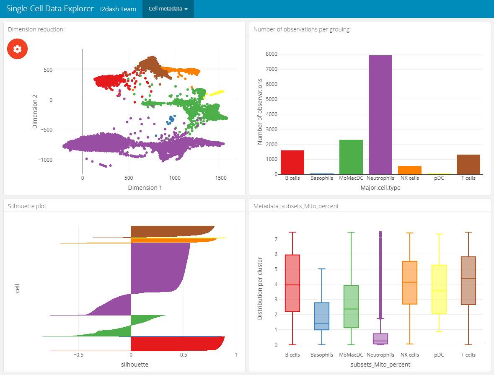
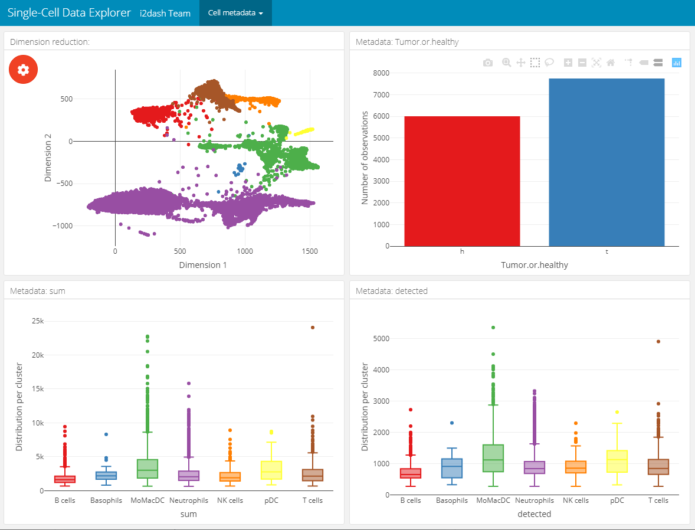
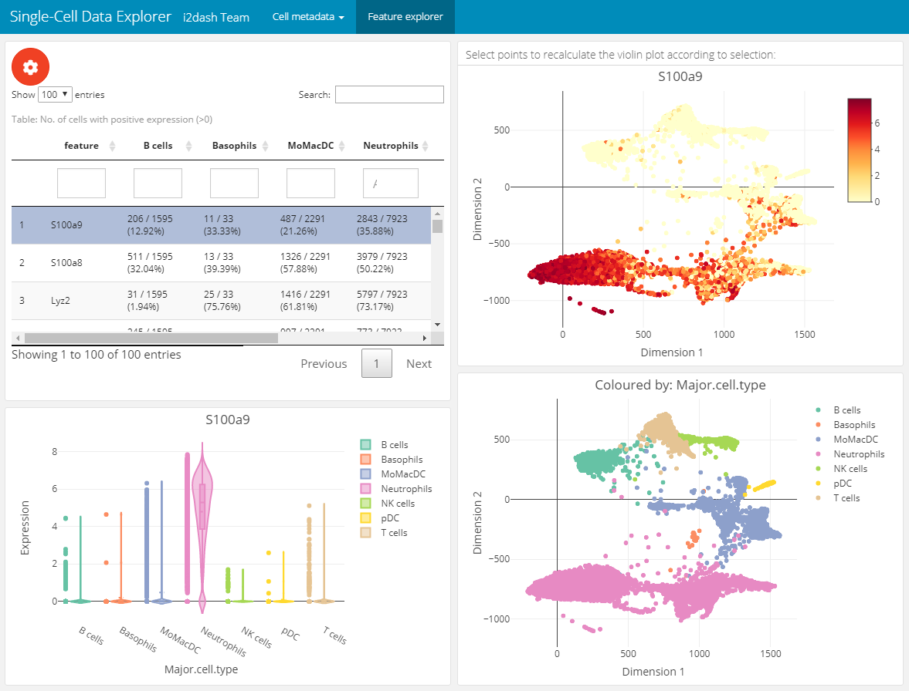
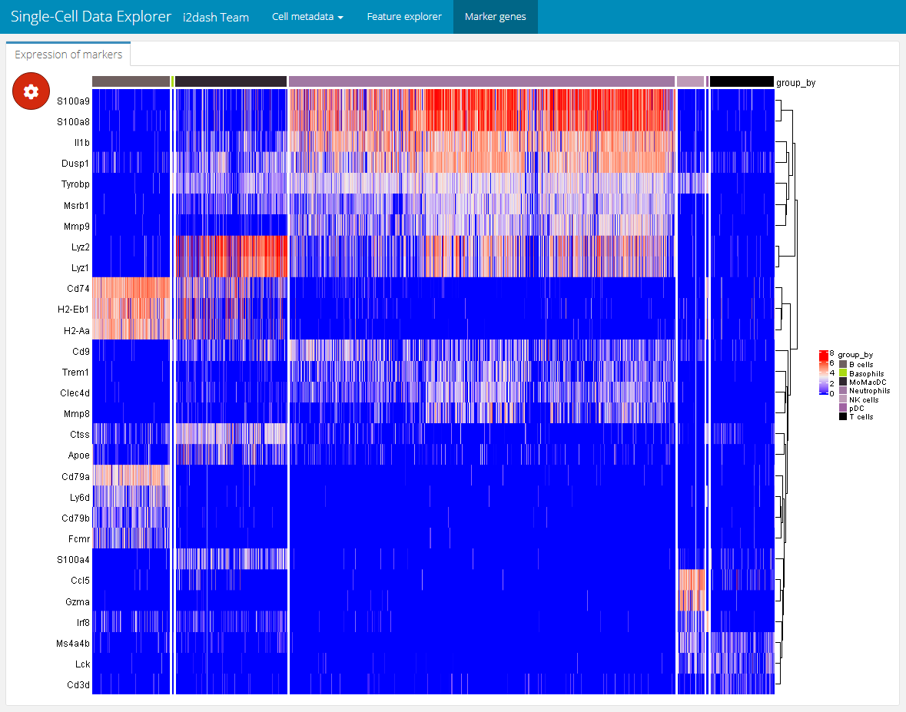
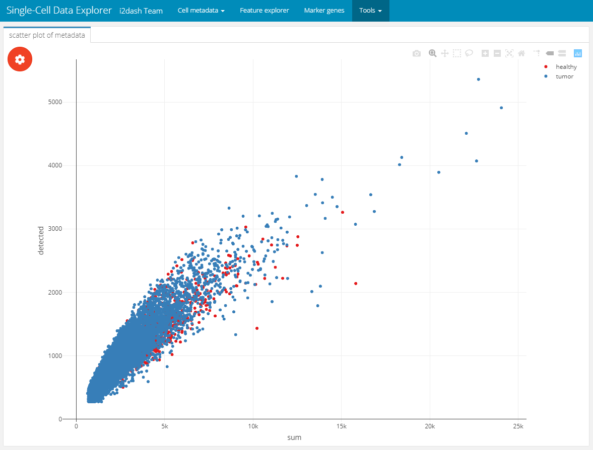
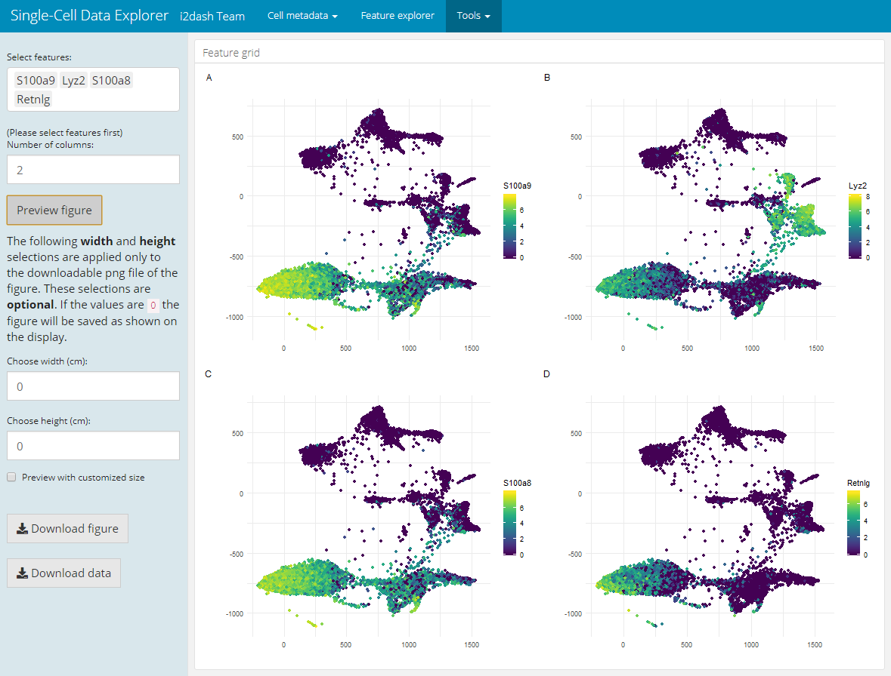

sc_data_explorer.RmdVignette last complied on 2020-11-05. i2dash is licenced under MIT + file LICENSE.
In the following example we build a dashboard, which enables the exploration of gene expression values and metadata coupled with low dimensional embedding. Instead of creating local objects and load these in the components, like we did in the previous use case, we use mainly native tools and pre-defined pages from the i2dash.scrnaseq package. You can inspect the demo of the resulting dashboard here.
At first, load the SingleCellExperiment object of the data we used in the first use-case (see here). We subset the sce object according to the identified outliers, perform a log-transformed normalization on the count-matrix and identify the highly variable genes. For these steps, the packages scater and scran are used.
library(SingleCellExperiment) library(scater) library(scran) # Read the SingleCellExperiment sce_full <- scRNAseq::ZilionisLungData("mouse") sce_full <- sce_full[, colData(sce_full)$Used==TRUE] colnames(sce_full) <- paste0(colnames(sce_full),"_", colData(sce_full)$Library) as_factor <- c("Library", "Animal", "Run", "Tissue", "Library prep batch", "Most likely Immgen cell type", "Major cell type", "Minor subset") colData(sce_full)[as_factor] <- lapply(colData(sce_full)[as_factor], as.factor) colnames(colData(sce_full))[11] <- c("Major.cell.type") # optional downsampling for better performance sce <- sce_full[, sample(ncol(sce_full), 6000)] # Cell-level QC per.cell <- perCellQCMetrics(sce, subsets = list(Mito = grep("mt-", rownames(sce)))) colData(sce) <- cbind(colData(sce), per.cell) # Detect outliers qc.stats <- quickPerCellQC(sce, percent_subsets="subsets_Mito_percent") colData(sce) <- cbind(colData(sce), qc.stats) # Filtering sce2 <- sce[,!colData(sce)$discard] keep_feature <- nexprs(sce, byrow=TRUE) > 0 sce2 <- sce2[keep_feature,] # Normalization sce2 <- logNormCounts(sce2) # Get highly variable genes gene.var <- modelGeneVar(sce2) # the warning message can be ignored hvg <- getTopHVGs(gene.var, prop=0.1)
Simmilar to the first use-case, we create the i2dashboard object. In contrast, the mode of this dashboard is “interactive” (interactive = TRUE), which means that the interactivity is increased through Shiny input options.
library(i2dash) library(i2dash.scrnaseq) # Creating a new i2dashboard class object dashboard <- i2dashboard( title = "Single-Cell Data Explorer", author = "i2dash Team", interactive = TRUE, theme = "yeti", datadir = "datadir_use_case2" )
The following page for cell metadata analysis is one of the pre-defined pages in the i2dash.scrnaseq package. We add and define this page with the function add_dimred_sample_page().
This page provides the possibility to inspect the dimension reduction and distribution of cell metadata (e.g. cluster, timepoint, number of genes, etc). The page is build up on the 2x2 grid layout, which means that it may conatain a maximum of four components. The first component is obligatory a dimension reduction plot and the three other component slots are occupied by either box-, bar- or silhouette plots.
Reduced dimension plot: The data to use for the reduced dimension plot is defined by the parameter use_dimred. The plot is coloured by factorial metadata. With the parameter sample_metadata we provide a character vector containing the column names of sample metadata stored in the SingleCellExperiment or Seurat object. The parameter group_by should be one of the column names from sample_metadata and defines the colouring of the scatterplot. In the interactive mode of the dashboard, we can choose from columns of factorial data and colour the scatter plot by this factors. E.g. this is useful when we have processed a clustering on the dimension reduction and provide the name of the metadata column containing the clustering result with sample_metadata.
Bar- / box plots: As was said, the remaining component slots are occupied by box- or bar plots. The data for these plots is also defined in sample_metadata. The data type of the metadata determines whether the component is a bar- or a boxplot. Factorial data results in a barplot: The bars are the levels and the height of the bars represents the number of observation of the level. Numeric data produces a boxplot, which is grouped along the x-axis by the factorial metadata defined with group_by. In the interactive mode, the box plot is grouped by the selected data in the dropdown menu. Note, that the colors used for the box plot groups correspond to the colors used in the scatterplot.
Silhouette plot: Optionally we can define that one of the tree slots is occupied by a silhouette plot. This is done by setting the parameter show_silhouette to TRUE. The grouping of the silhouette plot is also defined by group_by parameter and can be changed in the interactive mode.
Additional barplot: Per default, one of the three slots is occupied by a bar plot that shows the number of observations of data defined by group_by or the selection of the dropdown menu in the interactive mode. It is possible to prevent this behaviour by setting the parameter show_group_sizes to FALSE.
A special feature of this page is, that the plots are linked together. This means that it is possible to select several points in the scatterplot of the dimension reduction or bars in the bar-/ silhouette plots with plotly’s selection tool. According to the selection the other plots are recalculated. This functionality works also in the static mode of the dashboard.
In this example we create two of these pages. Both pages are grouped under the button “Cell metadata” in the navigation bar. The first page contains a dimension reduction, a bar plot of the groups shown in the dimension reduction, a silhouette plot and a box plot of the subsets_Mito_percent column. Therefore, we provide only two metadata columns in sample_metadata. The second page does not contain the silhouette plot or the bar plot of group_by, instead we provide three more metadata column names, which will be used in the three free component slots.
# Page for metadata exploration with show_group_sizes = TRUE and show_silhouette = TRUE (see left image below) dashboard %<>% i2dash.scrnaseq::add_dimred_sample_page( object = sce2, use_dimred = "SPRING", sample_metadata = c("Major.cell.type", "subsets_Mito_percent", "Library", "Tissue"), group_by = "Major.cell.type", show_group_sizes = TRUE, show_silhouette = TRUE, page = "dimred_sample_page1", title = "Cell metadata 1", menu = "Cell metadata" ) # Page for metadata exploration with show_group_sizes = FALSE and show_silhouette = FALSE (see right image below) dashboard %<>% i2dash.scrnaseq::add_dimred_sample_page( object = sce2, use_dimred = "SPRING", sample_metadata = c("Major.cell.type", "Tissue", "sum", "detected"), group_by = "Major.cell.type", show_group_sizes = FALSE, show_silhouette = FALSE, page = "dimred_sample_page2", title = "Cell metadata 2", menu = "Cell metadata" )
Metadata exploration with show_group_sizes = TRUE and show_silhouette = TRUE
|
Metadata exploration with show_group_sizes = FALSE and show_silhouette = FALSE
|
|---|---|
|  |  |
The next page enables the exploration of gene expression values along the dimension reduction and clustering. This can be very useful e.g. for marker genes to compare their expression with the clustering. We add and define this page with the add_feature_expression_page() method.
The page is build up on the 2x2 grid layout: + Table of genes: The top left component is a table representing the statistic of the number of cells per grouping factor. Each row corresponds to a gene. We define the genes in the table with the parameter subset_row. In our example the first hundred highly variable genes are used. We provide several grouping factors with the parameter group_by. The grouping factor can be interactively selected.
Violin plot: The violin plot is located in the bottom left corner of the page and shows the expression values of the gene selected in the table. The plot is grouped by the selected grouping factor.
Reduced dimension plots: On the right side of the page two scatterplots represent the dimension reduction (use_dimred). The upper one is coloured by expression values of the selected gene. The lower one is coloured by the selected grouping factor.
The components are linked together, which means that it is possible to select a row in the table, which represents a gene and the upper scatterplot changes its colouring according to the expression values of the selected gene. The distributions in the violinplot are also recalculated. Further, it is possible to select several points in the scatterplot with plotly’s selection tool. According to the selection the violin plot reacts and is recalculated. This functionality works also in the static mode.
dashboard %<>% i2dash.scrnaseq::add_feature_expression_page( object = sce2, use_dimred = "SPRING", exprs_values = "logcounts", group_by = c("Major.cell.type", "Tissue", "Library"), subset_row = hvg[1:100], title = "Gene explorer" ) # The warning message: "attributes are not identical across measure variables; they will be dropped" can be ignored.

The used data set already contains metadata of a clustering. On the previous page we have already used the metadata “Major.cell.type” to colour the clusters of the scatterplot. To interpret these clusters, we need to identify the genes that drive separation between clusters. “These marker genes allow us to assign biological meaning to each cluster based on their functional annotation. In the most obvious case, the marker genes for each cluster are a priori associated with particular cell types, allowing us to treat the clustering as a proxy for cell type identity.” 1
We use the findMarkers() function from the scran package to get a DataFrame for each cluster containing the ranked genes based on the pairwise comparison of their differential gene expression between clusters. The lapply() function subsets the first ten marker gene candidates for each cluster. Finally, we get a vector with these unique marker gene candidates.
markers <- findMarkers(sce2, colData(sce2)$Major.cell.type) marker_list <- lapply(markers, function(x){rownames(x)[1:10]}) marker_names <- unique(unlist(marker_list, recursive = F, use.names = F))
The expression values grouped by the clusters can be nicely displayed as a heatmap. Therefore, we add an interactive heatmap to the next page of the dashboard. This component has the advantage of some interactive elements, e.g. the possibility to split or aggregate the heatmap according to a grouping or to cluster the rows and columns. The heatmap visualize each cell as column and the marker genes as rows. The color value corresponds to the expression value of the respective gene. We create the component with the add_component() function and provide the function i2dash.scrnaseq::heatmap as the component parameter. We define the logcount assay, which should be used for the expression values of the heatmap. With subset_row we subset the assay according to the marker candidates. Further, we provide the possibility to split or group the heatmap according to factorial metadata e.g. “Major.cell.type”. We define several metadata columns so that the user can select the grouping interactively.
dashboard %<>% i2dash::add_page( page = "marker", title = "Marker genes", layout = "default" ) %>% i2dash::add_component( page = "marker", component = i2dash.scrnaseq::heatmap, object = sce2, exprs_values = "logcounts", subset_row = marker_names, split_by = c("Major.cell.type", "Tissue", "Library"), aggregate_by = c("Major.cell.type", "Tissue", "Library"), title = "Expression of marker genes" )
Interactively, the end-user can select Major.cell.type in the “Split columns by” dropdown menu found in the plot settings (the red gear button) and set “Clustering” to row. This will produce the heatmap shown below. With this heatmap it is possible to visualize the extression values of the marker genes according to their cluster.

In the first use-case, we created objects and used them as input for the add_component() function. In this way, we visualized the metadata of the SingleCellExperiment. Now we want to use components of i2dash.scrnaseq, which allows us to provide an enhanced interactivity for the end-user. With the i2dash.scrnaseq::scatterplot component we can easily define several columns of metadata plotted along the axis, so the user can interactively choose the data he is most interested in.
To create this scatterplot component, the function i2dash.scrnaseq::scatterplot is used in the function call of add_component(). Then we need to provide further specific parameters required by i2dash.scrnaseq::scatterplot. We provide the sce object, from which the required data will extracted. Further, we limit the columns the end-user can choose from by providing the parameters x, y and colour_by.
dashboard %<>% i2dash::add_page( page = "tools_1", title = "Interactive scatter plot", layout = "default", menu = "Tools" ) %>% i2dash::add_component( component = i2dash.scrnaseq::scatterplot, page = "tools_1", title = "scatter plot of metadata", object = sce2, from = "colData", x = c("sum", "detected", "subsets_Mito_percent"), y = c("sum", "detected", "subsets_Mito_percent"), colour_by = c("Tissue", "Major.cell.type", "Library", "discard") )

Another pre-defined page, that is only used in the interactive mode, is the “Feature grid” page. It visualizes several feature expressions (obtained from exprs_values) along a dimension reduction in a grid layout. Interactively, the user can select the dimension reduction (defined by the parameter use_dimred), several features of interest (from subset_row) and the number of columns of the grid layout. If subset_row is not provided, all features of exprs_values are selectible on the page. After the user selceted the features, the image will be generated by clicking on the button “Generate plot”. This page enables the user to create and download high-quality figures with user-defined dimensions for presentations/ publications.
dashboard %<>% i2dash.scrnaseq::add_feature_grid_page( object = sce2, use_dimred = "SPRING", exprs_values = "logcounts", subset_row = hvg[1:100] )

The final step is the assembly of the dashboard. During this step an R markdown (Rmd) document is created. This Rmd file needs to be deployed to a Shiny Server. You can use the i2dash docker container available here to create a local Shiny server. Alternatively, you can view the dashboard by clicking the “Run Document” button in RStudio IDE.
i2dash::assemble(dashboard, file = "scDataExplorer.Rmd", exclude = "default")